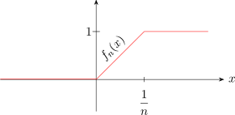
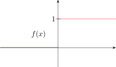

2.7 Uniform Convergence
When two operations are performed on functions, it may make a difference in which order the operations are carried out e.g
Let \(\, f_n(x) = \begin {cases} 0 & \text {if}\hspace {0.3cm} x < 0\\ nx & \text {if}\hspace {0.3cm} 0\leq x \leq \dfrac {1}{n}\\ 1 & \text {if}\hspace {0.3cm} x> 1\\ \end {cases}\)
for each fixed \(x\), \(\, f_n(x)\longrightarrow f(x)\,\) as \(n\longrightarrow \infty \), where
\[f(x) = \begin {cases} 0 & \text {for}\hspace {0.3cm} x\leq 0\\ 1 & \text {for}\hspace {0.3cm} x>0\\ \end {cases}\]


Now, \(\displaystyle {\lim _{n\rightarrow \infty }\, \lim _{x\rightarrow \infty } f_n(x) = \lim _{n \rightarrow \infty } \, 0 = 0}\). But \(\displaystyle {\lim _{x\rightarrow \infty }\,\lim _{n\rightarrow \infty } f_n(x) = \lim _{n \rightarrow \infty } f(x)}\,\) which does not exist since \(f(x) \longrightarrow 1\) as \(x \longrightarrow 0^+\) and \(f(x) \longrightarrow 0\) as \(x \longrightarrow 0^-\). Note however that \(f_n\) is continuous everywhere and \(f_n\) converges to \(f\) point wise. i.e \(f_n(x) \longrightarrow f(x)\) for each \(x\) but \(f\) is discontinuous at \(x= 0\).
Example 2.7.1. Let \(\hspace {0.3cm} f_n(x) = \begin {cases} n\, e^{-nx} & , \hspace {0.2cm} x>0\\ 0 & , \hspace {0.2cm} x\leq 0\\ \end {cases}\)
In this case, \(f_n \longrightarrow f\) point wise where \(f(x) = 0\) for all \(x\). Now \[ \lim _{n\rightarrow \infty } \int ^{\infty }_0f_n(x)\,dx = \lim _{n \rightarrow \infty } 1 = 1\]
\[\text {but}\hspace {0.5cm} \int ^{\infty }_0\, \lim _{n\rightarrow \infty } \, f_n(x) \, dx = \int ^{\infty }_0 f(x)\, dx = 0\] Thus, although \(f_n \longrightarrow f\) point wise. \[\int ^{\infty }_0f_n(x)\, dx \longrightarrow \int ^{\infty }_0f(x)\, dx\] In other words, the limit of the integral of \(f_n\) is not the integral of the limit of \(f_n\).
Questions on this section
Stuck on something here? Ask below and it stays attached to this topic.